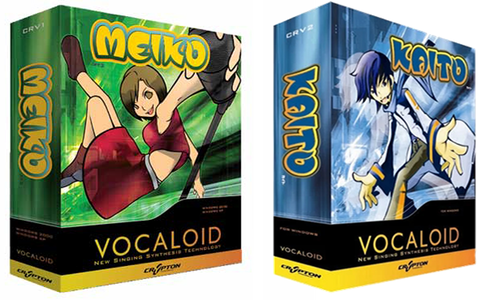
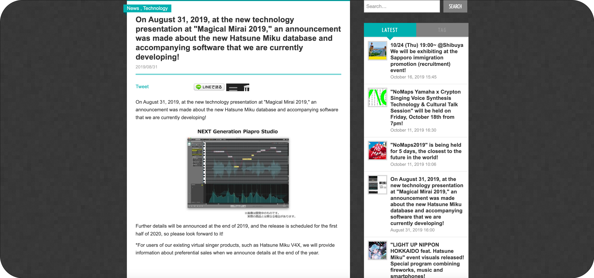
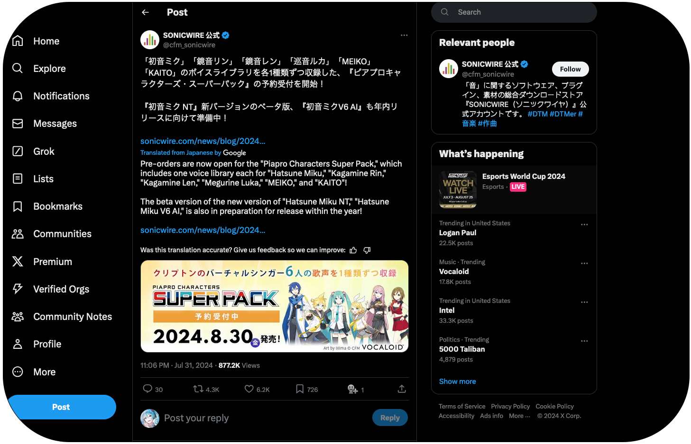

The Partnership Between Crypton Future Media and Yamaha
This part of VOCALOID's story is kind of complicated, so hold on tight... In 2004, Yamaha started a partnership with a lesser-known software company based out of Sapporo by the name of Crypton Future Media. They were the second distributor for Yamaha, and the first voicepack they released was Meiko in November 2004. As stated in the Pre-Miku section of the site, she was a success and they eventually released Kaito in 2005. Both were successful enough to keep Crypton as a distributor and CFM began work on their own VOCALOID for VOCALOID 2.

Meiko and Kaito Box Art for VOCALOID 1 (2004 and 2005)
NOTE: A misconception that I even had when originally making this website was that Meiko and Kaito were made by Crypton Future Media. This is untrue. Kaito and Meiko were made by Yamaha, BUT distributed by Crypton. This would change with the CV (Character Voice Series) in 2007.
As stated in the note above, the CV (or Character Voice) series would begin development for VOCALOID 2, and the first CV character would be released on August 31st, 2007 with the release of, you guessed it, Hatsune Miku with her codename being CV01. After Miku took off and her sales sored, Crypton would begin work on CV02 and CV03, which became the Kagamine Twins (Rin and Len) and the Megurine Luka in 2008 and 2009 respectively.

Hatsune Miku V2 Character Art (2007)
Kagamine Rin and Len V4X Design (2015)
Megarine Luka V4X Design (2015)
Updates to all the Cryptonloids (including Meiko and Kaito) would continue for many years, with updates to VOCALOID 3 and 4. But, this partnership was not long for this world. On August 31st, 2019 (which was Miku's 12 birthday), Crypton announced at Magical Mirai 2019 (a Miku/VOCALOID concert series in Japan) that they were moving away from VOCALOID in favor of their own editor: Piapro Studio, named for the Piapro license that Crypton gave their VOCALOIDs.

Magical Mirai 2019 Announcement (From Archive.org's Wayback Machine and Translated)
This was not great, since everyone associated Miku and the other Cryptonloaids with VOCALOID, but it was what is was. The latest versions of all the Cryptonloids would be for VOCALOID 4 (Miku V4X released in 2016), and that was it... Unitl August 1st, 2024.

Sonicwire Announcement (August 1st, 2024 on Twitter - Translated)
Not only would all the Cryptonloids get packed into one software package that would cost around $150 USD (as of writing this), but Miku would be coming back to VOCALOID 6 later this year. Now, there will be AI features sprinkled in, but this is a great step for Yamaha and Crypton. It only took 5 years from the split and 8 years from the last voicepack release and most likely a dropoff in VOCALOID sales to do it...